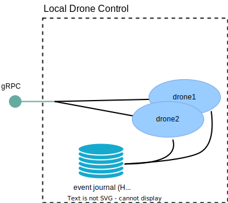

Local Drone Control Service
As the other features of Akka Edge are build on top of Event Sourcing, let us start by implementing a digital twin for drones using the Akka Event Sourced Behavior API.

We will represent drone as an Event Sourced entity, if you are unfamiliar with Event Sourcing, refer to the Event Sourcing section in the Akka guide for an explanation. The Event Sourcing with Akka video is also a good starting point for learning Event Sourcing.
For drones to communicate their location to the digital twin we will create a gRPC API.
When this first step is completed, the drones will be able to report their location and users inspect the current location of a drone connected to the local control center PoP.
Implementing a Drone digital twin
Commands and events
Commands are the public API of an entity that other parts of the system use to interact with it. Entity state can only be changed by commands. The results of commands are emitted as events. A command can request state changes, and different events might be generated depending on the current state of the entity. A command can also be rejected if it has invalid input or can’t be handled by the current state of the entity.
The Drone only accepts two commands: ReportLocation and GetLocation. When the reported location changes it always persists a PositionUpdated event, but additionally, whenever the position means it changed place on a more coarse grained grid, it also emits a CoarseGrainedLocationChanged event. We will revisit the reason for the coarse grained event in the next step in this guide.
The definition of the commands and events look like this:
- Scala
-
source
/** * This interface defines all the commands (messages) that the Drone actor supports. */ sealed trait Command extends CborSerializable /** * A command to report the current position (coordinates and altitude) of the drone. * * It replies with `Done`, which is sent back to the caller when * all the events emitted by this command are successfully persisted. */ final case class ReportPosition(position: Position, replyTo: ActorRef[Done]) extends Command /** * A command to query the current position (coordinates and altitude) of the drone. * * It replies with a `StatusReply[Position]`, which is sent back to the caller as a success if the * coordinates are known. If not an error is sent back. */ final case class GetCurrentPosition(replyTo: ActorRef[StatusReply[Position]]) extends Command /** * This interface defines all the events that the Drone supports. */ sealed trait Event extends CborSerializable final case class PositionUpdated(position: Position) extends Event final case class CoarseGrainedLocationChanged( coordinates: CoarseGrainedCoordinates) extends Event - Java
-
source
/** This interface defines all the commands (messages) that the Drone actor supports. */ interface Command extends CborSerializable {} /** * A command to report the current position (coordinates and altitude) of the drone. * * <p>It replies with `Done`, which is sent back to the caller when all the events emitted by this * command are successfully persisted. */ public static final class ReportPosition implements Command { public final Position position; public final ActorRef<Done> replyTo; public ReportPosition(Position position, ActorRef<Done> replyTo) { this.position = position; this.replyTo = replyTo; } } /** * A command to query the current position (coordinates and altitude) of the drone. * * <p>It replies with a `StatusReply<Position>`, which is sent back to the caller as a success * if the coordinates are known. If not an error is sent back. */ public static final class GetCurrentPosition implements Command { public final ActorRef<StatusReply<Position>> replyTo; @JsonCreator public GetCurrentPosition(ActorRef<StatusReply<Position>> replyTo) { this.replyTo = replyTo; } } /** This interface defines all the events that the Drone supports. */ interface Event extends CborSerializable {} public static final class PositionUpdated implements Event { public final Position position; @JsonCreator public PositionUpdated(Position position) { this.position = position; } } public static final class CoarseGrainedLocationChanged implements Event { public final CoarseGrainedCoordinates coordinates; @JsonCreator public CoarseGrainedLocationChanged(CoarseGrainedCoordinates coordinates) { this.coordinates = coordinates; } }
State
When the location is reported it is kept as a currentState, additionally the 100 previous reported locations are kept in a list.
The list of historical locations is not currently used for anything but is here to show that an entity could keep a time window of fine-grained information to make local decisions at a detail level that would be impractical and maybe not even interesting to report to a central cloud service.
- Scala
-
source
final case class State( currentPosition: Option[Position], historicalPositions: Vector[Position]) extends CborSerializable { def coarseGrainedCoordinates: Option[CoarseGrainedCoordinates] = currentPosition.map(p => CoarseGrainedCoordinates.fromCoordinates(p.coordinates)) } - Java
-
source
class State implements CborSerializable { Optional<Position> currentPosition; final List<Position> historicalPositions; State() { currentPosition = Optional.empty(); historicalPositions = new ArrayList<>(); } Optional<CoarseGrainedCoordinates> coarseGrainedCoordinates() { return currentPosition.map(p -> CoarseGrainedCoordinates.fromCoordinates(p.coordinates)); } }
Command handler
The Drone entity will receive commands that report when the Drone changes location. We will implement a command handler to process these commands and emit a reply.
The command handler for the Drone looks like this:
- Scala
-
source
private def handleCommand( state: State, command: Command): ReplyEffect[Event, State] = command match { case ReportPosition(position, replyTo) => if (state.currentPosition.contains(position)) // already seen Effect.reply(replyTo)(Done) else { val newCoarseGrainedLocation = CoarseGrainedCoordinates.fromCoordinates(position.coordinates) if (state.coarseGrainedCoordinates.contains(newCoarseGrainedLocation)) { // same grid location as before Effect .persist(PositionUpdated(position)) .thenReply(replyTo)(_ => Done) } else { // no previous location known or new grid location Effect .persist( PositionUpdated(position), CoarseGrainedLocationChanged(newCoarseGrainedLocation)) .thenReply(replyTo)(_ => Done) } } case GetCurrentPosition(replyTo) => state.currentPosition match { case Some(position) => Effect.reply(replyTo)(StatusReply.Success(position)) case None => Effect.reply(replyTo)( StatusReply.Error("Position of drone is unknown")) } } - Java
-
source
@Override public CommandHandler<Command, Event, State> commandHandler() { return newCommandHandlerBuilder() .forAnyState() .onCommand(ReportPosition.class, this::onReportPosition) .onCommand(GetCurrentPosition.class, this::onGetCurrentPosition) .build(); } private Effect<Event, State> onReportPosition(State state, ReportPosition command) { if (state.currentPosition.equals(Optional.of(command.position))) { // already seen return Effect().reply(command.replyTo, done()); } else { var newCoarseGrainedLocation = CoarseGrainedCoordinates.fromCoordinates(command.position.coordinates); if (state.coarseGrainedCoordinates().equals(Optional.of(newCoarseGrainedLocation))) { // same grid location as before return Effect() .persist(new PositionUpdated(command.position)) .thenReply(command.replyTo, newState -> done()); } else { // no previous location known or new grid location return Effect() .persist( Arrays.asList( new PositionUpdated(command.position), new CoarseGrainedLocationChanged(newCoarseGrainedLocation))) .thenReply(command.replyTo, newState -> done()); } } } private Effect<Event, State> onGetCurrentPosition(State state, GetCurrentPosition command) { return state .currentPosition .map(position -> Effect().reply(command.replyTo, StatusReply.success(position))) .orElse(Effect().reply(command.replyTo, StatusReply.error("Position of drone is unknown"))); }
Note how the handler de-duplicates reports of the same location, immediately replying with an acknowledgement without persisting any change.
In addition to storing the PositionUpdated event, the command handler also calculates a coarse grained location, and persists a CoarseGrainedLocationChanged event as well, if it did change from the previous coarse grained location.
Event handler
From commands, the entity creates events that represent state changes. Aligning with the command handler above, the entity’s event handler reacts to events and updates the state. The events are continuously persisted to the Event Journal datastore, while the entity state is kept in memory. Other parts of the application may listen to the events. In case of a restart, the entity recovers its latest state by replaying the events from the Event Journal.
The event handler only reacts to the PositionUpdated event and ignores the CoarseGrainedLocationChanged as the coarse grained location can be calculated from the more fine-grained position coordinates:
- Scala
-
source
private def handleEvent(state: State, event: Event): State = event match { case PositionUpdated(newPosition) => val newHistoricalPositions = state.currentPosition match { case Some(position) => val withPreviousPosition = state.historicalPositions :+ position if (withPreviousPosition.size > LocationHistoryLimit) withPreviousPosition.tail else withPreviousPosition case None => state.historicalPositions } state.copy( currentPosition = Some(newPosition), historicalPositions = newHistoricalPositions) case _: CoarseGrainedLocationChanged => // can be derived from position, so not really updating state, // persisted as events for aggregation state } - Java
-
source
@Override public EventHandler<State, Event> eventHandler() { return newEventHandlerBuilder() .forAnyState() .onEvent( PositionUpdated.class, (state, event) -> { if (state.currentPosition.isPresent()) { state.historicalPositions.add(state.currentPosition.get()); if (state.historicalPositions.size() > LOCATION_HISTORY_LIMIT) { state.historicalPositions.remove(0); } } state.currentPosition = Optional.of(event.position); return state; }) .onEvent( CoarseGrainedLocationChanged.class, (state, event) -> // can be derived from position, so not really updating state, // persisted as events for aggregation state) .build(); }
Serialization
The state and events of the entity must be serializable because they are written to the datastore, if the local drone control needs to scale out across several nodes to handle traffic, the commands would also be sent between nodes within the Akka cluster. The sample project includes built-in CBOR serialization using the Akka Serialization Jackson module. This section describes how serialization is implemented. You do not need to do anything specific to take advantage of CBOR, but this section explains how it is included.
The state, commands and events are marked as akka.serialization.jackson.CborSerializable which is configured to use the built-in CBOR serialization.
Journal storage
In this sample we use Akka Persistence R2DBC with the H2 in-process database, with a file backed storage. H2 requires no additional external database service so can be convenient for both development and production usage where only a single node interacts with the journal and overhead needs to be kept low.
It is of course also possible to instead use a separate standalone database such as for example PostgreSQL.
Config to use H2 looks like this:
- Scala
-
source
akka { persistence { journal { plugin = "akka.persistence.r2dbc.journal" } snapshot-store { plugin = "akka.persistence.r2dbc.snapshot" } state { plugin = "akka.persistence.r2dbc.state" } r2dbc { # Single projection instance, no need for many topics journal.publish-events-number-of-topics = 1 connection-factory = ${akka.persistence.r2dbc.h2} connection-factory { additional-init = ${akka.projection.r2dbc.default-h2-schema} protocol = "file" # database name is full path to database # default for running from SBT but keeping state across runs database = "./target/drone-db" # inject a path to a persistent volume when running in a container database = ${?H2_DATABASE_PATH} } } } } - Java
-
source
akka { persistence { journal { plugin = "akka.persistence.r2dbc.journal" } snapshot-store { plugin = "akka.persistence.r2dbc.snapshot" } state { plugin = "akka.persistence.r2dbc.state" } r2dbc { # Single projection instance, no need for many topics journal.publish-events-number-of-topics = 1 connection-factory = ${akka.persistence.r2dbc.h2} connection-factory { additional-init = ${akka.projection.r2dbc.default-h2-schema} protocol = "file" # database name is full path to database # default for running from SBT but keeping state across runs database = "./target/drone-db" # inject a path to a persistent volume when running in a container database = ${?H2_DATABASE_PATH} } } } }
In addition to the configuration, the following additional dependencies are needed in the project build:
- sbt
libraryDependencies ++= Seq( "com.h2database" % "h2" % "2.1.210", "io.r2dbc" % "r2dbc-h2" % "1.0.0.RELEASE" )- Maven
<dependencies> <dependency> <groupId>com.h2database</groupId> <artifactId>h2</artifactId> <version>2.1.210</version> </dependency> <dependency> <groupId>io.r2dbc</groupId> <artifactId>r2dbc-h2</artifactId> <version>1.0.0.RELEASE</version> </dependency> </dependencies>- Gradle
dependencies { implementation "com.h2database:h2:2.1.210" implementation "io.r2dbc:r2dbc-h2:1.0.0.RELEASE" }
gRPC Service API for the drone communication
To allow drones to actually use the service we need a public API reachable over the network. For this we will use Akka gRPC giving us a type safe, efficient protocol that allows clients to be written in many languages.
The service descriptor for the API is defined in protobuf, it implements the report command that entity accepts but not one matching the get location command:
- Scala
-
source
syntax = "proto3"; option java_multiple_files = true; option java_package = "local.drones.proto"; import "google/protobuf/empty.proto"; import "common/coordinates.proto"; package local.drones; // gRPC definition for DroneService, for drones to interact with service DroneService { rpc ReportLocation (ReportLocationRequest) returns (google.protobuf.Empty) {} // deliveries rpc RequestNextDelivery (RequestNextDeliveryRequest) returns (RequestNextDeliveryResponse) {} rpc CompleteDelivery (CompleteDeliveryRequest) returns (google.protobuf.Empty) {} } message ReportLocationRequest { string drone_id = 1; common.Coordinates coordinates = 2; // altitude in meters double altitude = 4; } message RequestNextDeliveryRequest { string drone_id = 1; } message RequestNextDeliveryResponse { string delivery_id = 1; common.Coordinates from = 2; common.Coordinates to = 3; } message CompleteDeliveryRequest { string delivery_id = 1; } - Java
-
source
syntax = "proto3"; option java_multiple_files = true; option java_package = "local.drones.proto"; import "common/coordinates.proto"; package local.drones; // gRPC definition for DroneService, for drones to interact with service DroneService { rpc ReportLocation (ReportLocationRequest) returns (ReportLocationResponse) {} // deliveries rpc RequestNextDelivery (RequestNextDeliveryRequest) returns (RequestNextDeliveryResponse) {} rpc CompleteDelivery (CompleteDeliveryRequest) returns (CompleteDeliveryResponse) {} } message ReportLocationRequest { string drone_id = 1; common.Coordinates coordinates = 2; // altitude in meters double altitude = 4; } message ReportLocationResponse { } message RequestNextDeliveryRequest { string drone_id = 1; } message RequestNextDeliveryResponse { string delivery_id = 1; common.Coordinates from = 2; common.Coordinates to = 3; } message CompleteDeliveryRequest { string delivery_id = 1; } message CompleteDeliveryResponse { }
When compiling the project the Akka gRPC sbtmaven plugin generates a service interface for us to implement. Our implementation of it interacts with the entity:
- Scala
-
source
package local.drones import akka.Done import akka.actor.typed.scaladsl.AskPattern._ import akka.actor.typed.{ ActorRef, ActorSystem } import akka.cluster.sharding.typed.scaladsl.ClusterSharding import akka.grpc.GrpcServiceException import akka.util.Timeout import com.google.protobuf.empty.Empty import io.grpc.Status import org.slf4j.LoggerFactory import local.drones.proto import scala.concurrent.Future import scala.concurrent.TimeoutException class DroneServiceImpl( deliveriesQueue: ActorRef[DeliveriesQueue.Command], settings: Settings)(implicit system: ActorSystem[_]) extends proto.DroneService { import system.executionContext private val logger = LoggerFactory.getLogger(getClass) implicit private val timeout: Timeout = settings.askTimeout private val sharding = ClusterSharding(system) override def reportLocation( in: proto.ReportLocationRequest): Future[Empty] = { val coordinates = in.coordinates.getOrElse { throw new GrpcServiceException( Status.INVALID_ARGUMENT.withDescription( "coordinates are required but missing")) } logger.info( "Report location ({},{},{}) for drone {}", coordinates.latitude, coordinates.longitude, in.altitude, in.droneId) val entityRef = sharding.entityRefFor(Drone.EntityKey, in.droneId) val reply: Future[Done] = entityRef.ask( Drone.ReportPosition( Position(Coordinates.fromProto(coordinates), in.altitude), _)) val response = reply.map(_ => Empty.defaultInstance) convertError(response) } // #requestNextDelivery override def requestNextDelivery(in: proto.RequestNextDeliveryRequest) : Future[proto.RequestNextDeliveryResponse] = { logger.info("Drone {} requesting next delivery", in.droneId) // get location for drone val entityRef = sharding.entityRefFor(Drone.EntityKey, in.droneId) // ask for closest delivery val response = for { position <- entityRef.askWithStatus[Position](Drone.GetCurrentPosition(_)) chosenDelivery <- deliveriesQueue .askWithStatus[DeliveriesQueue.WaitingDelivery]( DeliveriesQueue.RequestDelivery(in.droneId, position.coordinates, _)) } yield { proto.RequestNextDeliveryResponse( deliveryId = chosenDelivery.deliveryId, from = Some(chosenDelivery.from.toProto), to = Some(chosenDelivery.to.toProto)) } convertError(response) } // #requestNextDelivery override def completeDelivery( in: proto.CompleteDeliveryRequest): Future[Empty] = { logger.info("Delivery {} completed", in.deliveryId) deliveriesQueue .askWithStatus[Done](DeliveriesQueue.CompleteDelivery(in.deliveryId, _)) .map(_ => Empty.defaultInstance) } private def convertError[T](response: Future[T]): Future[T] = { response.recoverWith { case _: TimeoutException => Future.failed( new GrpcServiceException( Status.UNAVAILABLE.withDescription("Operation timed out"))) case exc => Future.failed( new GrpcServiceException( Status.INTERNAL.withDescription(exc.getMessage))) } } } - Java
-
source
package local.drones; import static akka.actor.typed.javadsl.AskPattern.*; import akka.Done; import akka.actor.typed.ActorRef; import akka.actor.typed.ActorSystem; import akka.cluster.sharding.typed.javadsl.ClusterSharding; import akka.grpc.GrpcServiceException; import akka.pattern.StatusReply; import io.grpc.Status; import java.util.concurrent.CompletionStage; import java.util.concurrent.TimeoutException; import local.drones.proto.*; import org.slf4j.Logger; import org.slf4j.LoggerFactory; public class DroneServiceImpl implements DroneService { private static final Logger logger = LoggerFactory.getLogger(DroneServiceImpl.class); private final ActorRef<DeliveriesQueue.Command> deliveriesQueue; private final Settings settings; private final ActorSystem<?> system; private final ClusterSharding sharding; public DroneServiceImpl( ActorSystem<?> system, ActorRef<DeliveriesQueue.Command> deliveriesQueue, Settings settings) { this.system = system; this.deliveriesQueue = deliveriesQueue; this.settings = settings; this.sharding = ClusterSharding.get(system); } @Override public CompletionStage<ReportLocationResponse> reportLocation(ReportLocationRequest in) { var coordinates = in.getCoordinates(); if (coordinates == null) { throw new GrpcServiceException( Status.INVALID_ARGUMENT.withDescription("coordinates are required but missing")); } logger.info( "Report location ({},{},{}) for drone {}", coordinates.getLatitude(), coordinates.getLongitude(), in.getAltitude(), in.getDroneId()); var entityRef = sharding.entityRefFor(Drone.ENTITY_KEY, in.getDroneId()); CompletionStage<Done> reply = entityRef.ask( replyTo -> new Drone.ReportPosition( new Position(Coordinates.fromProto(coordinates), in.getAltitude()), replyTo), settings.askTimeout); var response = reply.thenApply(done -> ReportLocationResponse.getDefaultInstance()); return convertError(response); } // #requestNextDelivery @Override public CompletionStage<RequestNextDeliveryResponse> requestNextDelivery( RequestNextDeliveryRequest in) { logger.info("Drone {} requesting next delivery", in.getDroneId()); // get location for drone var entityRef = sharding.entityRefFor(Drone.ENTITY_KEY, in.getDroneId()); var positionReply = entityRef.askWithStatus( (ActorRef<StatusReply<Position>> replyTo) -> new Drone.GetCurrentPosition(replyTo), settings.askTimeout); // ask for closest delivery CompletionStage<DeliveriesQueue.WaitingDelivery> chosenDeliveryReply = positionReply.thenCompose( position -> askWithStatus( deliveriesQueue, replyTo -> new DeliveriesQueue.RequestDelivery( in.getDroneId(), position.coordinates, replyTo), settings.askTimeout, system.scheduler())); var response = chosenDeliveryReply.thenApply( chosenDelivery -> RequestNextDeliveryResponse.newBuilder() .setDeliveryId(chosenDelivery.deliveryId) .setFrom(chosenDelivery.from.toProto()) .setTo(chosenDelivery.to.toProto()) .build()); return convertError(response); } // #requestNextDelivery @Override public CompletionStage<CompleteDeliveryResponse> completeDelivery(CompleteDeliveryRequest in) { logger.info("Delivery {} completed", in.getDeliveryId()); CompletionStage<Done> completeReply = askWithStatus( deliveriesQueue, replyTo -> new DeliveriesQueue.CompleteDelivery(in.getDeliveryId(), replyTo), settings.askTimeout, system.scheduler()); var reply = completeReply.thenApply(done -> CompleteDeliveryResponse.getDefaultInstance()); return convertError(reply); } private <T> CompletionStage<T> convertError(CompletionStage<T> response) { return response.exceptionally( error -> { if (error instanceof TimeoutException) { throw new GrpcServiceException( Status.UNAVAILABLE.withDescription("Operation timed out")); } else { throw new GrpcServiceException(Status.INTERNAL.withDescription(error.getMessage())); } }); } }
Finally, we need to start the gRPC server, making service implementation available for calls from drones:
- Scala
-
source
def start( interface: String, port: Int, system: ActorSystem[_], droneService: proto.DroneService, deliveriesQueueService: proto.DeliveriesQueueService): Unit = { implicit val sys: ActorSystem[_] = system implicit val ec: ExecutionContext = system.executionContext val service: HttpRequest => Future[HttpResponse] = ServiceHandler.concatOrNotFound( proto.DroneServiceHandler.partial(droneService), proto.DeliveriesQueueServiceHandler.partial(deliveriesQueueService), // ServerReflection enabled to support grpcurl without import-path and proto parameters ServerReflection.partial( List(proto.DroneService, proto.DeliveriesQueueService))) val bound = Http() .newServerAt(interface, port) .bind(service) .map(_.addToCoordinatedShutdown(3.seconds)) bound.onComplete { case Success(binding) => val address = binding.localAddress system.log.info( "Drone control gRPC server started {}:{}", address.getHostString, address.getPort) case Failure(ex) => system.log.error("Failed to bind gRPC endpoint, terminating system", ex) system.terminate() } } - Java
-
source
public static void start( String host, int port, ActorSystem<?> system, DroneService droneService, DeliveriesQueueService deliveriesQueueService) { var service = ServiceHandler.concatOrNotFound( DroneServiceHandlerFactory.create(droneService, system), DeliveriesQueueServiceHandlerFactory.create(deliveriesQueueService, system), // ServerReflection enabled to support grpcurl without import-path and proto parameters ServerReflection.create( Arrays.asList(DroneService.description, DeliveriesQueueService.description), system)); var bound = Http.get(system).newServerAt(host, port).bind(service); bound.whenComplete( (binding, error) -> { if (error == null) { binding.addToCoordinatedShutdown(Duration.ofSeconds(3), system); var address = binding.localAddress(); system .log() .info( "Drone control gRPC server started {}:{}", address.getHostString(), address.getPort()); } else { system.log().error("Failed to bind gRPC endpoint, terminating system", error); system.terminate(); } }); }
The Akka HTTP server must be running with HTTP/2 to serve gRPC, this is done through config:
Wiring it all up
The main of this service starts up an actor system with a root behavior which is responsible for bootstrapping all parts of the application.
Note that the bootstrap contains some parts not yet described, the DroneEvents and the DeliveriesQueue. They will be covered in the following sections of this guide and can be ignored for now.
- Scala
-
source
def main(args: Array[String]): Unit = { ActorSystem[Nothing](rootBehavior(), "local-drone-control") } private def rootBehavior(): Behavior[Nothing] = Behaviors.setup[Nothing] { context => val settings = Settings(context.system) context.log .info("Local Drone Control [{}] starting up", settings.locationId) // A single node, but still a cluster, to be able to run sharding for the entities val cluster = Cluster(context.system) cluster.manager ! Join(cluster.selfMember.address) // keep track of local drones, project aggregate info to the cloud Drone.init(context.system) context.spawn( DroneEvents.eventToCloudPushBehavior(settings)(context.system), "DroneEventsProjection") // consume delivery events from the cloud service val deliveriesQueue = context.spawn(DeliveriesQueue(), "DeliveriesQueue") context.spawn( DeliveryEvents.projectionBehavior(deliveriesQueue, settings)( context.system), "DeliveriesProjection") val deliveriesQueueService = new DeliveriesQueueServiceImpl(settings, deliveriesQueue)( context.system) val grpcInterface = context.system.settings.config .getString("local-drone-control.grpc.interface") val grpcPort = context.system.settings.config.getInt("local-drone-control.grpc.port") val droneService = new DroneServiceImpl(deliveriesQueue, settings)(context.system) LocalDroneControlServer.start( grpcInterface, grpcPort, context.system, droneService, deliveriesQueueService) Behaviors.empty } - Java
-
source
public static void main(String[] args) { ActorSystem.create(rootBehavior(), "local-drone-control"); } private static Behavior<Void> rootBehavior() { return Behaviors.setup( (ActorContext<Void> context) -> { var settings = Settings.create(context.getSystem()); context.getLog().info("Local Drone Control [{}] starting up", settings.locationId); // A single node, but still a cluster, to be able to run sharding for the entities var cluster = Cluster.get(context.getSystem()); cluster.manager().tell(new Join(cluster.selfMember().address())); // keep track of local drones, project aggregate info to the cloud Drone.init(context.getSystem()); context.spawn( DroneEvents.eventToCloudPushBehavior(context.getSystem(), settings), "DroneEventsProjection"); // consume delivery events from the cloud service var deliveriesQueue = context.spawn(DeliveriesQueue.create(), "DeliveriesQueue"); context.spawn( DeliveryEvents.projectionBehavior(context.getSystem(), deliveriesQueue, settings), "DeliveriesProjection"); var deliveriesQueueService = new DeliveriesQueueServiceImpl(context.getSystem(), settings, deliveriesQueue); var droneService = new DroneServiceImpl(context.getSystem(), deliveriesQueue, settings); var grpcInterface = context .getSystem() .settings() .config() .getString("local-drone-control.grpc.interface"); var grpcPort = context.getSystem().settings().config().getInt("local-drone-control.grpc.port"); LocalDroneControlServer.start( grpcInterface, grpcPort, context.getSystem(), droneService, deliveriesQueueService); return Behaviors.empty(); }); }
Running the sample
The complete sample can be downloaded from GitHub, but note that it also includes the next steps of the guide:
- Java: https://github.com/akka/akka-projection/tree/main/samples/grpc/local-drone-control-service-java
- Scala: https://github.com/akka/akka-projection/tree/main/samples/grpc/local-drone-control-service-scala
To start the sample:
sbt run
mvn compile exec:exec
Try it with grpcurl:
grpgrpcurl -d '{"drone_id":"drone1", "coordinates": {"longitude": 18.07125, "latitude": 59.31834}, "altitude": 5}' -plaintext 127.0.0.1:8080 local.drones.DroneService.ReportLocation
What’s next?
- Consuming the published coarse grained drone locations in a cloud service